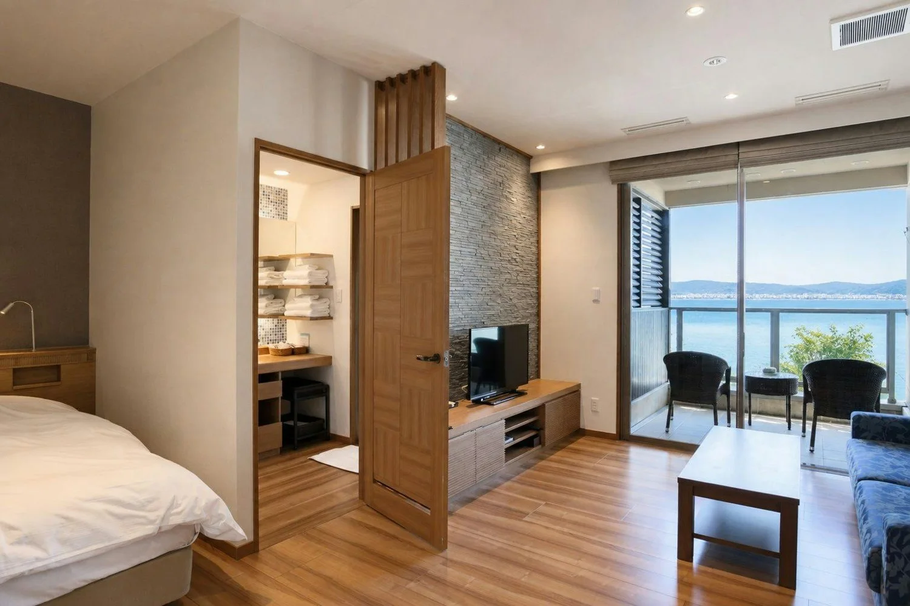

两张独立床
筛选 Twin / 2 Double，并查看客房照片。Hollywood Twin 可能为并床；温泉旅馆的和室、榻榻米或日式床铺不自动视为独立双床。
THE PLACES WE STAY
温泉旅馆的安静，城市酒店的从容。
以两张独立床为优先，把每晚的选择看得更清楚。

本页已按新行程更新查询日期。旧版报价不适用，五个平台均未取得本次日期的有效同房型实时报价，因此不展示历史价格或“最低价”。选择相同床型、餐食、取消条件及含税口径后再比较；人民币显示不代表所有渠道均以人民币扣款。
SELECTED STAYS / CNY
筛选 Twin / 2 Double，并查看客房照片。Hollywood Twin 可能为并床；温泉旅馆的和室、榻榻米或日式床铺不自动视为独立双床。
以 2 位成人、1 间房、每晚含税人民币价比较；将早餐、晚餐、入汤税、积分抵扣与取消截止日分别记录。
App 按钮使用携程链接协议，能否唤起取决于设备、App 安装及浏览器。若无响应，使用旁边网页入口；未承诺全部设备自动跳转。
04 / 温泉旅馆连续入住 4 晚前确认餐食变化；别府可考虑「界 别府 2 晚＋晴海 2 晚」，本页先按整段日期查询候选酒店，确定拆住后需重新选择日期。Agoda 当前提供平台首页入口，需自行输入酒店与日期。